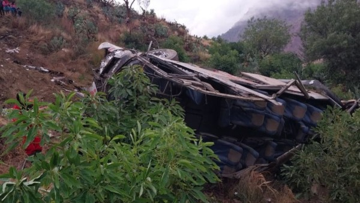

Desides ir a conocer Santa Cruz en el camindo te maravillas por toda la flora, pero de un momento al otro empieza a llover com mucha fuerza pero eso solo hacia que el paisaje se vea mejor, pero la fuertes lluvias icieron que el camino sea mas dificil de avanzar las ruedas se atascan en el barro sin dejarlos avanzar, tras estar barados ahi por mucho tiempo el monte que tenian justo encima se derrumba empujando a todos y sepultandolos en el precipicio. Luego en la noticias salio que una flota fue enterrada por el derrumbe de una montaña en la carretera Monteagudo-Santa Cruz